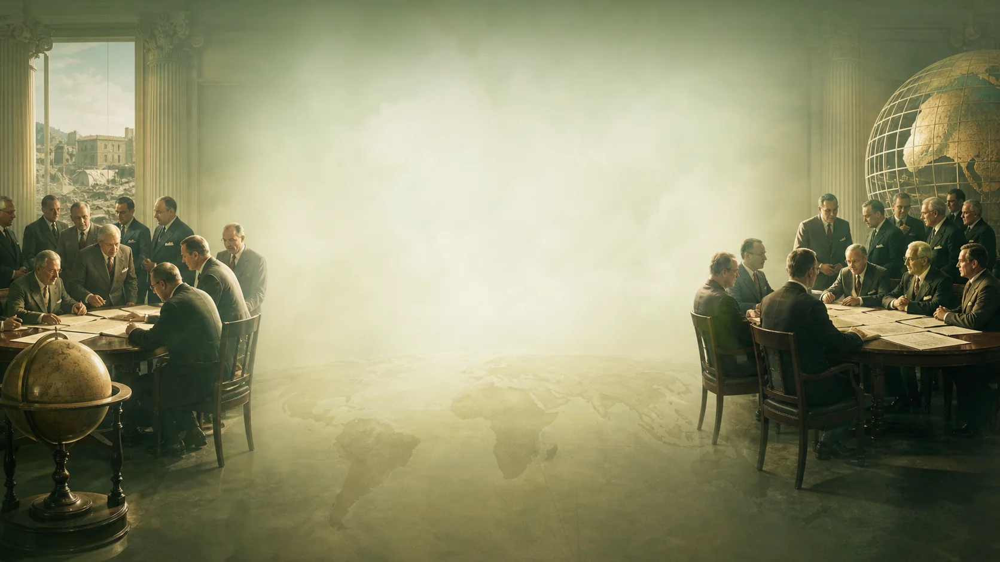
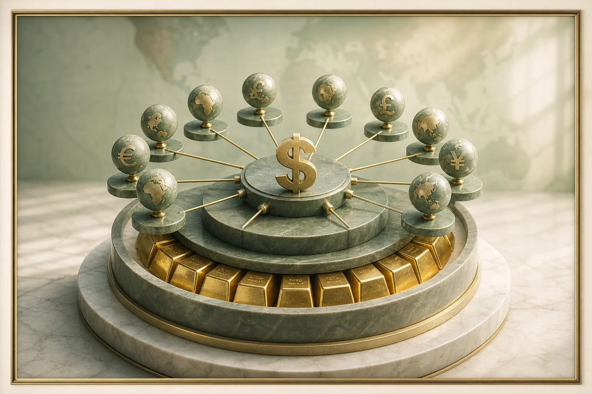

เปิด Unit 11 ด้วยมุมระดับโลก ให้ผู้เรียนรู้สึกว่านี่ไม่ใช่แค่ chapter ของสหรัฐฯ แต่เป็น chapter ของการออกแบบโครงสร้างเงินโลกใหม่
ยกระดับสายตาจากเหตุการณ์ในสหรัฐฯ ไปสู่การจัดระเบียบการเงินทั้งโลก
ปูทางให้หน้า next อธิบายโครงสร้างของ Bretton Woods ได้อย่างมีฐาน
หลังจากนั้น โลกก็เข้าสู่ช่วงสงครามโลกครั้งที่ 2 และเมื่อสงครามใกล้จบ ประเทศต่าง ๆ ก็เริ่มคิดต่อว่า หลังสงครามโลกจะจัดระเบียบการเงินกันอย่างไร
คำตอบที่ออกมาคือระบบที่เราเรียกว่า Bretton Woods ซึ่งไม่ใช่แค่ชื่อการประชุม แต่คือความพยายามออกแบบโครงสร้างเงินของโลกใหม่
เพราะฉะนั้น สิ่งที่ควรเห็นในหน้านี้คือโลกกำลังเลือกศูนย์กลางใหม่ของระบบ ไม่ใช่แค่กำลังเขียนกฎทางเทคนิค

นี่คือหน้าที่ต้องทำให้ผู้เรียนเห็น architecture ของระบบแบบมองครั้งเดียวเข้าใจ ไม่ควรเล่าเป็นถ้อยคำล้วนจนจับภาพไม่ออก
ทำให้ผู้เรียนเข้าใจว่า Bretton Woods คือระบบชั้นซ้อน ไม่ใช่การกลับไปใช้ทองคำตรง ๆ
ย้ำว่าการทำให้ดอลลาร์เป็นประตูหลักคือการยกระดับอำนาจของสหรัฐฯ ในระบบการเงินโลก
แกนของระบบนี้คือ ประเทศต่าง ๆ จะผูกค่าเงินของตัวเองกับดอลลาร์ และดอลลาร์จะผูกกับทองคำอีกชั้นหนึ่ง
พูดอีกแบบคือ ทองคำยังอยู่ที่ฐานของระบบ แต่ดอลลาร์กลายเป็นประตูหลักที่เชื่อมทุกประเทศเข้าหามัน
ผลคือสหรัฐฯ มีบทบาทสูงมาก เพราะดอลลาร์ไม่ได้เป็นแค่เงินของประเทศหนึ่งอีกต่อไป แต่กลายเป็นศูนย์กลางของระบบโลกทั้งระบบ